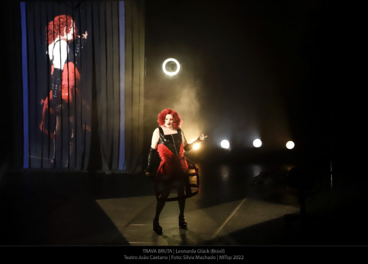
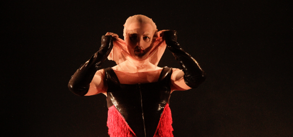

Solo de Leonarda Glück. Prêmio: 6ª Mostra de Dramaturgia em Pequenos Formatos, Centro Cultural São Paulo. Estreia na Sala Jardel Filho, CCSP, São Paulo.
Criação, texto e interpretação: Leonarda Glück · Direção: Gustavo Bitencourt · Trilha original: Jo Mistinguett · Luz: Wagner Antônio · Assistência de iluminação: Dimitri Luppi · Vídeo e projeções: Ricardo Kenji · Figurino: Fabianna Pescara e Renata Skrobot · Ilustração: André Costa · Direção de produção: Igor Augustho · Produção executiva: Lydia Arruda · Design gráfico: Pablito Kucarz · Fotografia: Alessandra Haro · Produção: Pomeiro Gestão Cultural.
O edital tinha sido conquistado antes, mas a montagem foi adiada pela pandemia. O processo aconteceu quase um ano inteiramente online: Leonarda em São Paulo, eu em Piçarras.
Foi um convite que eu quase não aceitei. Era um texto sobre a experiência da Leonarda como mulher trans no Brasil, e eu não sabia onde ia poder contribuir. Lendo e relendo, fui vendo o quanto aquele texto também falava de coisas que dizem respeito a todo mundo.
“Bitencourt propõe uma encenação de estética fragmentada tanto pelos elementos cênicos, quanto pelos limites da ficção e da realidade.”
